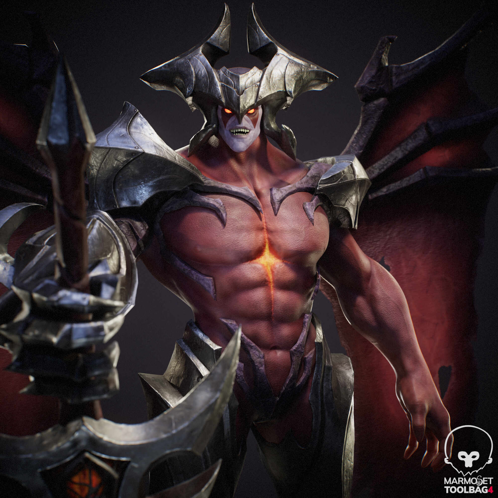

이름: 아트록스
포지션: 탑
역할군: 전사
난이도: 상
아트록스는 거대한 검을 휘두르며 전장을 압도하는 다크인 전사입니다. 강력한 범위 공격과 회복 능력을 바탕으로 긴 전투에서 매우 위협적인 모습을 보입니다.
• 광역 스킬을 활용해 다수의 적을 압박할 수 있습니다.
• 전투 중 체력 회복 능력이 뛰어나 지속 교전에 강합니다.
• 스킬 사거리와 타이밍을 정확히 맞추는 것이 중요한 챔피언입니다.
“거대한 검으로 전장을 지배하는 파괴적인 다크인 전사”